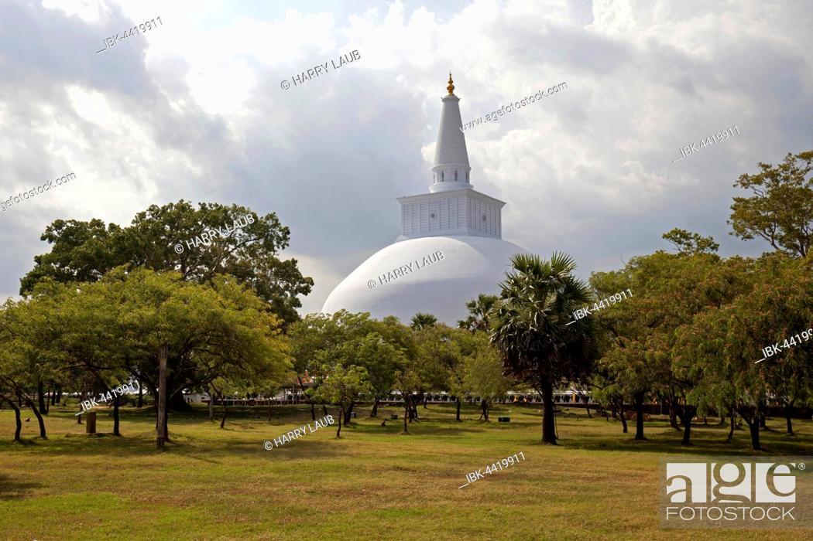

North Central Province is one of the nine provinces of Sri Lanka, the first level administrative division of the country.
The provinces have existed since the 19th century but did not have any legal status until 1987 when the 13th Amendment to the
Constitution of Sri Lanka established provincial councils.
The province is the largest by size, and second least populated in the country. The province consists of the districts of
Anuradhapura and Polonnaruwa, both of which were important ancient Sri Lankan kingdoms. The climate is semi-arid, and the
forests are dry evergreen forests.
1. Wilpattu National Park
Wilpattu National Park (Willu-pattu, "Land of Lakes") is a national park in Sri Lanka. The unique feature of this park is the existence
of "Willus" (natural lakes) – natural, sand-rimmed water basins or depressions that fill with rainwater. Located on the northwest coast
lowland dry zone of Sri Lanka, the park is 30 km (19 mi) west of Anuradhapura and 26 km (16 mi) north of Puttalam
(approximately 180 km (110 mi) north of Colombo). The park is 1,317 km2 (508 sq mi) (131,693 hectares) in area and ranges from 0–152 m
(0–499 ft) above sea level.
Nearly one hundred and six lakes (Willu) and tanks are found spread throughout Wilpattu. Wilpattu is the largest and one of the oldest
national parks in Sri Lanka. Wilpattu is world-renowned for its leopard (Panthera pardus kotiya) population. A remote camera survey
conducted in Wilpattu from July to October 2015 by the Wilderness and Wildlife Conservation Trust captured photographs of forty-nine
individual leopards in the surveyed area, the core area density of which was between that of Yala National Park's Block I and Horton Plains
National Park.
From December 1988 to 16 March 2003, the park was closed due to security concerns surrounding the Sri Lankan Civil War, before being
reopened to visitors sixteen years later. Visitor access is currently limited to approximately 25% of the park, the remainder of which
is dense forest or scrub. Popular visiting periods span between the months of February and October, although there are a number of private
ecotourism groups that conduct safaris year-round.
There are many types of vegetation to be found in Wilpattu, including littoral vegetation, such as salt grass and low scrub monsoon
forest with tall emergents, such as palu (Manilkara hexandra), and satin (Chloroxylon swietenia), milla (Vitex altissima), weera
(Drypetes sepiaria), ebony (Diospyros ebenum) and wewarna (Alseodaphne semecapriflolia).
2. Minneriya National Park
Minneriya is a small town in Sri Lanka that is famous for two things — the great Minneriya lake built by King Mahasen and Minneriya
National Park which is a hot spot for safari lovers because of its abundance of elephants. Furthermore, it is near the tourist-friendly
Habarana and the world heritage sites Anuradhapura, Polonnaruwa and Sigiriya.
The area is home to the Infantry Training Centre as well as a training centre of the Military Police of the Sri Lanka Army.
The 6th Artillery Regiment is based at Minneriya along with the SLAF base SLAF Hingurakgoda.
The area is situated in dry zone of Sri Lanka and receives an average rainfall of 1,500–2,000 millimetres (59–79 in).
The lowest temperature and highest of the park are 20.6 °C (69.1 °F) and 34.5 °C (94.1 °F) respectively. The main sources of water
for the tank are a diversion of Amban River and Elahera canal. The wet season lasts during the north eastern monsoon from October to
January and from May to September considered as the dry season. The main habitats of Minneriya are of several types, including
low-canopy montane forests, intermediate high-canopy secondary forests, scrublands, abandoned chena lands, grasslands, rocky outcrops,
and wetlands.
Minneriya National Park is the world largest known meeting place of Asian Elephants in the world. During this period herds up to
350 elephants are seen at the 8,890 hectare park within a few square kilometers of the Minneriya Tank. Some reports account number
of elephants to as high as 700. In August and September each year during the dry season, wild elephants migrates from Wasgamuwa
National Park to Minneriya National Park for search of food and shelter. Tourists visit Minneriya National Park largely because of
elephants, especially in dry season.
The park is an important habitat for the two endemic monkeys of Sri Lanka: purple-faced langur and toque macaque. Large herbivorous
mammals such as Sri Lankan sambar deer and Sri Lankan axis deer frequent the park. Rare and endangered species such as Sri Lankan
leopard and Sri Lankan sloth bear inhabit in Minneriya. Minneriya is one of the areas where the gray slender loris is reportedly
found in Sri Lanka.
3. Mihintale
Mihintale is a mountain peak near Anuradhapura in Sri Lanka. It is believed by Sri Lankans to be the site of a meeting between the
Buddhist monk Mahinda and King Devanampiyatissa which inaugurated the presence of Buddhism in Sri Lanka. It is now a pilgrimage site,
and the site of several religious monuments and abandoned structures.
Approximately 12.5 km (7.8 mi) east of Anuradhapura, close to the Anuradhapura - Trincomalee Road is situated the "Missaka Pabbata"
which is 1,000 feet (300 m) in height and is one of the peaks of a mountainous range.
According to Dipavamsa and Mahavamsa, Thera Mahinda came to Sri Lanka from India on the full moon day of the month of Poson (June)
and met King Devanampiyatissa and preached the Buddhist doctrine. The traditional spot where this meeting took place is revered by
the Buddhists of Sri Lanka. Therefore, in the month of Poson, Buddhists make their pilgrimage to Anuradhapura and Mihintale.
Mahinda was the son of Emperor Ashoka of India. King Ashoka embraced Buddhism after he was inspired by a monk named “Nigrodha.”
The King was in great misery after witnessing the devastation caused by expansionist wars. Meeting this peaceful young monk was a
turning point in his life, thereafter, he renounced war.
He was determined to spread the message of peace. As a result, both his son and daughter were ordained as Buddhist monastics,
and became enlightened Arahats. In his quest to spread the message of peace instead of war, Ashoka sent his son Mahinda, to the
island of Lanka, which was also known as “Sinhalé”. This island was ruled by his friend King Devanampiyatissa. Thus, “Mahinda” was
the Indian name, which in Sinhalé, became “Mihindu.”
In Sinhala Mihin-Thalé literally means the “plateau of Mihindu”. This plateau is on top of a hill from where Arahat Mihindu was
supposed to have called King Devanampiyatissa, by the King's name to stop him shooting a deer. Hence, “Mihin Thalé” is a specifically
Sinhala term.
At the foot of the mountain are the ruins of a hospital, medical bath (or stone canoe in which patients were immersed in medicinal oil)
a stone inscription and urns belonging to the ancient period have been unearthed. Between the hospital and the steps leading to the rock
are the ruins of a large monastery. On the floors of the square building which is 125 feet (38 m) on one side, are beautiful carvings
and also are stone balustrades and guard stones.
4. Ruwanwelisaya Dagaba
The Ruwanweli Maha Seya, also known as the Mahathupa (the Great Thupa) is a stupa (a hemispherical structure containing relics) in
Anuradhapura, Sri Lanka.Two quarts or one Dona of the Buddha's relics are enshrined in the stupa, making it the largest collection of
his relics anywhere. It was built by Sinhalese King Dutugemunu in c. 140 B.C., who became king of Sri Lanka after a war in which the
Chola King Elāra (Ellalan) was defeated. It is also known as Swarnamali Seya, Svaṇṇamāli Mahaceti (in Pali) and Rathnamali Seya.
This is one of the "Solosmasthana" (the 16 places of veneration) and the "Atamasthana" (the 8 places of veneration). The stupa is one of
the world's tallest ancient monuments, standing at 103 m (338 ft) and with a circumference of 290 m (951 ft). The original stupa had been
bout 55 m (180 ft) in height and was renovated by many kings. The Kaunghmudaw Pagoda in Sagaing, Myanmar is modelled after this stupa
The Mahavamsa contains a detailed account on the construction and the opening ceremony of the stupa.

The stupa was covered by jungle as of the 19th century. After fund raising efforts by a bhikkhu, it was renovated in the early 20th
century. The Ruwanweli Seya Restoration Society, most notably the philanthropist Hendrick Appuhamy, donated Rs 20 million (1912 )
for the restoration works, the foundation was founded in 1902 and the final crowning of the stupa took place on 17 June 1940.
King Dutugemunu started the construction of the stupa, however he died from an illness before it was finished. The construction began only
after he conquered Rajarata from the Chola general Elāra.
The stupa was damaged by during the Chola conquest of Anuradhapura, but was renovated during the reign of Parakramabahu I (1153–1187),
who invaded South India, capturing large parts of Tamil Nadu.
Parakramabahu used the captured Tamils for the work of renovation.
.jpg) From December 1988 to 16 March 2003, the park was closed due to security concerns surrounding the Sri Lankan Civil War, before being
reopened to visitors sixteen years later. Visitor access is currently limited to approximately 25% of the park, the remainder of which
is dense forest or scrub. Popular visiting periods span between the months of February and October, although there are a number of private
ecotourism groups that conduct safaris year-round.
From December 1988 to 16 March 2003, the park was closed due to security concerns surrounding the Sri Lankan Civil War, before being
reopened to visitors sixteen years later. Visitor access is currently limited to approximately 25% of the park, the remainder of which
is dense forest or scrub. Popular visiting periods span between the months of February and October, although there are a number of private
ecotourism groups that conduct safaris year-round.

 Mihintale is a mountain peak near Anuradhapura in Sri Lanka. It is believed by Sri Lankans to be the site of a meeting between the
Buddhist monk Mahinda and King Devanampiyatissa which inaugurated the presence of Buddhism in Sri Lanka. It is now a pilgrimage site,
and the site of several religious monuments and abandoned structures.
Approximately 12.5 km (7.8 mi) east of Anuradhapura, close to the Anuradhapura - Trincomalee Road is situated the "Missaka Pabbata"
which is 1,000 feet (300 m) in height and is one of the peaks of a mountainous range.
Mihintale is a mountain peak near Anuradhapura in Sri Lanka. It is believed by Sri Lankans to be the site of a meeting between the
Buddhist monk Mahinda and King Devanampiyatissa which inaugurated the presence of Buddhism in Sri Lanka. It is now a pilgrimage site,
and the site of several religious monuments and abandoned structures.
Approximately 12.5 km (7.8 mi) east of Anuradhapura, close to the Anuradhapura - Trincomalee Road is situated the "Missaka Pabbata"
which is 1,000 feet (300 m) in height and is one of the peaks of a mountainous range.